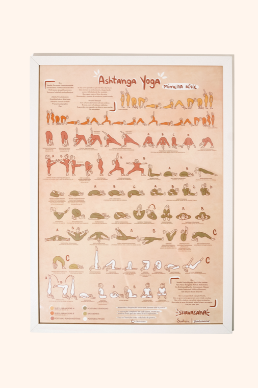

Onde o funil perde a venda antes do carrinho — diagnóstico a partir do Microsoft Clarity (mapas de clique e rolagem + gravações) e validação técnica direta no site.

Cadastre seu e-mail e ganhe…
Menu e sacola concentram os cliques (11%). Na home, as pessoas procuram um caminho no menu — a vitrine em si engaja pouco.
O aviso de cookies cobre ~40% da primeira tela no celular e fica fixo, escondendo o conteúdo logo na chegada.
Balão de chat sobre o conteúdo — aparece em 7 de cada 10 sessões, competindo com o que importa.
Só 24% rolam além da primeira tela. A vitrine de produtos, abaixo, é vista por pouquíssima gente.
A foto do produto é muito tocada (8%): as pessoas querem ampliar e ver mais imagens — sinal de interesse.
“Adicionar à sacola” é o clique nº 1 (16%). A vontade de comprar existe — o problema é o caminho até ela.
Pop-up de desconto sobre o botão de compra no momento da decisão — atravessa justamente a ação principal.
Descrição e medidas não abrem ao toque. As pessoas tocam esperando expandir e nada acontece (os “cliques mortos”). Pix e parcelamento também só aparecem lá embaixo.
O banner de cookies é fixo e ocupa ~40% da tela do celular, sobrepondo os cards da home e, na página de produto, o próprio “Adicionar à sacola”. Somam-se o widget de chat/contato (em 72%+ das sessões) e um pop-up “Desconto pra você” que aparece justamente sobre o rodapé de compra.
Apenas 28,7% rolam além de 20% da página de produto. Pix e parcelamento não aparecem em nenhum ponto da página (confirmado no código), e as avaliações ficam no fim de uma página de 5.912px. Quem decide na primeira tela não vê prova social nem condição de pagamento.
mencionaPix:false).Descrição, características e medidas são texto estático, sem acordeões (details: 0 no DOM). Nas gravações, usuários tocam nesses blocos esperando expandir — e nada acontece. É a origem dos cliques mortos: interação ausente, não quebrada.
1,70 página por sessão e o menu-hambúrguer como clique nº 1 (11,4%) indicam que falta descoberta na própria página: as pessoas recorrem ao menu/busca em vez de fluir por vitrines e recomendações.
A IA das gravações observou usuários alternando repetidamente entre variações (Matosha, MATravel) antes de decidir — falta um guia claro do que muda. Some-se o LCP de 2,8s no mobile, que contribui para a saída precoce por impaciência.
“Adicionar à sacola” é o clique nº 1 na página de produto (16,3%) e permanece fixo no rodapé — bom. Há adições reais (Matosha, Cartasflow) e rage clicks ≈ 0. O problema não é falta de desejo; é a fricção que atravessa o caminho até a sacola.
Todos os assets do tema e do Shopify carregam 200 OK. Os erros de console eram de uma extensão do navegador do visitante (excalidraw), não do site. O “erro JS” apontado pela IA do Clarity é impreciso.
details: 0 no DOM. Os dead clicks vêm de interatividade ausente, não de bug — e por isso são fáceis de resolver.
mencionaPix:false, mencionaParcel:false em toda a página de produto. A condição de pagamento só aparece no checkout — tarde demais.
5.912px de altura, com o widget de avaliações (judge.me) lá embaixo. Com 40% de scroll ≈ 2.365px, quase ninguém chega às reviews.
A barra já exibe “Frete Grátis acima de R$350” (era R$650). O heatmap histórico ainda mostra R$650 por ser janela de 30 dias.
GA4 (G-5JGTZSRW5Y) e Merchant Center (MC-TXQ5PKX52S), enviados pela integração Google & YouTube do Shopify, retornam 503 em 4 de 4 recargas — não é soluço. Clarity e Shopify (fonte de verdade de vendas) intactos, mas GA4/Google Ads/Merchant podem estar subnotificando eventos e conversões dessa via.
Cookies, chat e pop-up de desconto não podem coexistir sobre o “Adicionar à sacola”. Reduzir cookies a uma faixa fina e atrasar chat/pop-up para depois de scroll ou X segundos.
Trazer Pix/parcelamento, avaliações e frete para os primeiros 20% da página de produto. Encurtar a galeria de imagem que empurra tudo para baixo.
Converter descrição, características e “Mais infos” em acordeões/abas. Elimina os dead clicks e melhora a leitura no mobile — correção simples, alto retorno.
Resolver na página a dúvida “qual modelo?” — tabela de diferenças, guia de tamanho de mat/pôster. Reduz a hesitação vista nas gravações.
Comprimir/lazy-load da imagem hero e priorizar o conteúdo acima da dobra. Reduz o abandono por impaciência no topo.
503 recorrente confirmado (4/4). Checar no GA4 DebugView/Realtime se os eventos chegam e revisar o app Google & YouTube do Shopify. Se não chegam, é subnotificação de conversões que distorce otimização de campanha e feed.
Vitrines temáticas, “combina com” e recomendações na home e no produto reduzem a dependência do menu e elevam páginas/sessão acima de 1,70.